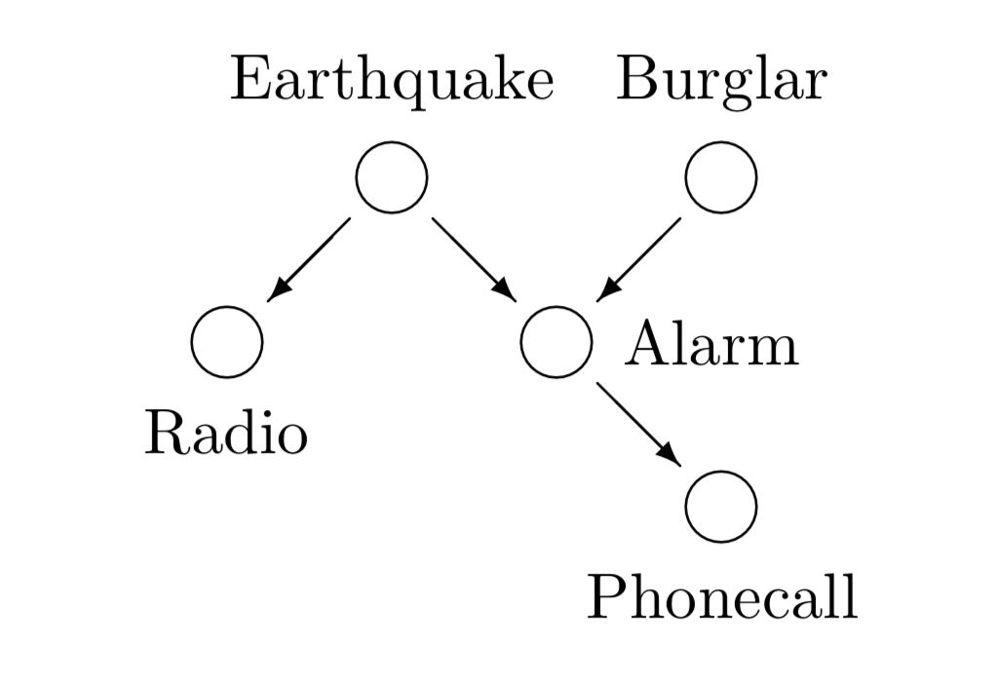

We start our discussion on inference with an example given in Mackay (2003) - the burglar alarm. The problem serves very well as a first contact to inference, since we are dealing with binary random variables in a simple probabilistic network. It is possible to solve the problem exactly and therefore applying the most important rules to simple expressions.
Fred lives in Los Angeles and commutes 60 miles to work. Whilst at work, he receives a phone-call from his neighbour saying that Fred’s burglar alarm is ringing. What is the probability that there was a burglar in his house today? While driving home to investigate, Fred hears on the radio that there was a small earthquake that day near his home. ‘Oh’, he says, feeling relieved, ‘it was probably the earthquake that set off the alarm’. What is the probability that there was a burglar in his house? (After Pearl, 1988).
Intuitively we assume that our example is described by the following Belief Network.
|  |
|---|
| Belief network for the burglar alarm problem. (Mackay (2003) |
Given the belief network, the joint probability factorizes to
where we have introduced the following variables - burglar b - earthquake e - radio r - alarm a - phonecall p
Now, with help of prior knowledge, we can estimate the probabilities and list them in the table below.
We assume a small probability f of a false alarm caused by some other event, the denotes the reliability of the alarm and the earthquake triggers the alarm with a probability of . Further, assuming
seems to be plausible. In particular this means, that we have certainty for a=1, e=1, if we observe p=1, r=1 respectively.
Now we can formulate the core idea of the inference task:
Receiving a phone call (), what can we say about the probability of a burglar and an earthquake, i.e.
For we have certainty for , with Bayes’ Theorem we arrive at
The expressions in the numerator, we can read off from the tables above. The unknown marginal probability on the other hand is fixed by the normalization constraint.
The probability for a burglar after a phonecall is given by the marginalization over the earthquake variable e
The probability of an earthquake on the other hand, is given by marginalization over the burglar b variable
The only accessible variables to Fred at work were the phonecall p and the radio r. But knowing the circumstances summarized in the belief network and probabilities we were able to infer the probability of a burglar or an earthquake.
In case of few and discrete variables, we are able to completely enumerate all hypotheses and evaluate their probabilities. In continuous hypothesis spaces however, this is no longer feasible.
E.g. for a two component Gaussian mixture model
we have 5 independent continuous parameters. As before we could by discretize the space as is needed for working with a computer and again completely enumerate and evaluate.
To reduce the uncertainty by say, a factor of 10, the costs for a grid method increases exponentially by a factor of . Consequently we need a different approach, which we will discuss below.